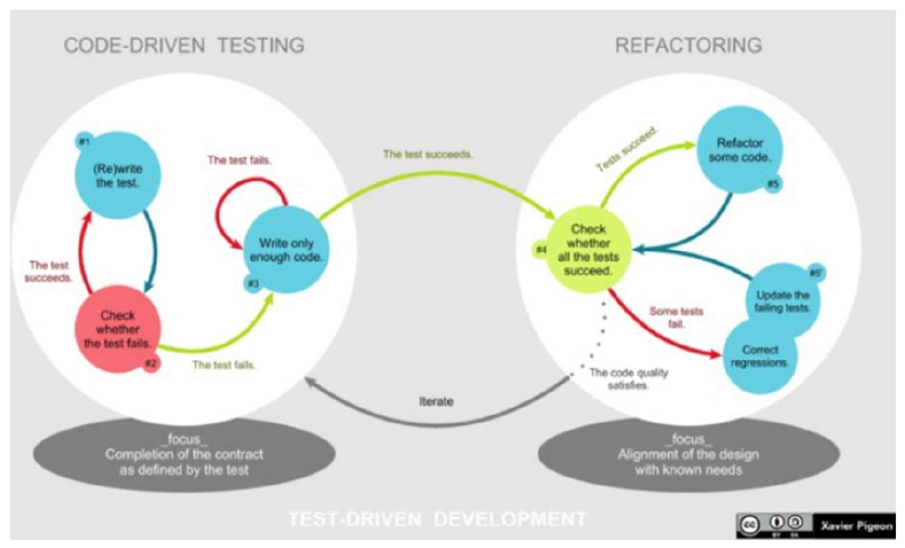
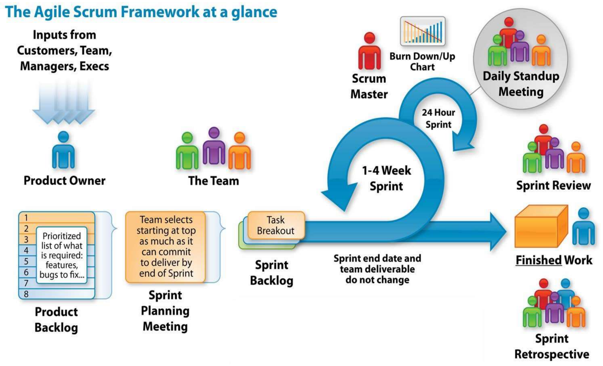

Traditional plan-driven processes struggle in modern software environments characterized by volatile requirements, rapid market shifts, and emergent user needs. Attempting to freeze specifications months before delivery creates an insurmountable gap between what was contracted and what users actually require.
Agile software development embraces change as an inevitable operational reality. Rather than relying on heavy upfront documentation, agile methodologies prioritize frequent delivery of working software through rapid, time-boxed iterations, direct stakeholder collaboration, and continuous empirical feedback.
1. The Agile Manifesto and Extreme Programming (XP)
In 2001, seventeen software leaders drafted the Agile Manifesto, establishing four fundamental value trade-offs:
- Individuals and interactions over processes and tools
- Working software over comprehensive documentation
- Customer collaboration over contract negotiation
- Responding to change over following a plan
(While there is value in the items on the right, we value the items on the left more).
Core Engineering Practices of Extreme Programming (XP)
While Scrum focuses primarily on project management, Extreme Programming (XP) establishes technical engineering practices designed to keep code quality high during rapid iteration:

- Test-Driven Development (TDD):
- Developers write automated unit test cases before writing the corresponding functional code.
- Follows the strict Red
Green
Refactor cadence:
- Red: Write a small test that fails (since the code does not exist).
- Green: Write the minimum viable code required to make the test pass.
- Refactor: Clean up internal code structure, eliminate duplication, and ensure high cohesion and low coupling while keeping tests green.
- Pair Programming:
- Two developers work together side by side at a single workstation on
all production code:
- The Driver: Writes code, focuses on immediate syntax, typing, and local implementation.
- The Navigator: Continuously reviews code, thinks strategically about architecture, catches bugs, and plans next steps.
- Enhances code quality, accelerates knowledge sharing, and eliminates single points of developer failure.
- Two developers work together side by side at a single workstation on
all production code:
- Continuous Integration (CI):
- Code is integrated into the shared mainline branch multiple times per day. Every commit triggers an automated build and test run, catching integration faults within minutes.
- Small, Frequent Releases:
- Deploying small, production-ready increments every few weeks minimizes release risk and accelerates user feedback loops.
2. The Scrum Framework
Scrum is an agile management framework for developing complex products in cross-functional, self-organizing teams using fixed-length iterations called Sprints (typically 2 to 4 weeks):

The Three Scrum Roles
| Role | Core Operational Responsibility | Key Invariants |
|---|---|---|
| Product Owner (PO) | Holds sole authority over the Product Backlog. Translates customer vision into prioritized User Stories; maximizes product business value. | Represents the customer and business sponsors. Does not manage daily developer tasks. |
| Scrum Master (SM) | Servant leader and agile coach. Facilitates Scrum ceremonies, removes impediments, and enforces Scrum practices. | Protects the Development Team from external interruptions and management interference. Not a project manager. |
| Development Team | A self-organizing, cross-functional group (ideally 5–9 members) possessing all skills required to build the product. | Jointly responsible for delivering a potentially shippable product increment each sprint. |
The Four Scrum Ceremonies (Events)
- Sprint Planning:
- PO presents prioritized Product Backlog items; the team determines the Sprint Goal, pulls items into the Sprint Backlog, and breaks them down into technical tasks.
- Daily Scrum (Standup):
- A 15-minute timeboxed daily synchronization meeting where each
developer answers three questions:
- What did I complete yesterday that helped achieve the Sprint Goal?
- What will I work on today?
- What impediments or blockers are in my way?
- A 15-minute timeboxed daily synchronization meeting where each
developer answers three questions:
- Sprint Review:
- A collaborative demonstration held at the end of the sprint where the team presents the completed, working product increment to stakeholders for direct feedback.
- Sprint Retrospective:
- An internal team meeting held after the Sprint Review to reflect on process efficiency: What went well? What went poorly? What concrete changes will the team adopt next sprint?
The Three Scrum Artifacts
- Product Backlog: An ordered, evolving inventory of
all features, technical requirements, and bug fixes desired in the
product. Conforms to the DEEP criteria:
- Detailed appropriately (near-term items are detailed and granular; future items are coarse).
- Emergent (continuously updated based on learning).
- Estimated (assigned story points).
- Prioritized (highest business value on top).
- Sprint Backlog: The subset of Product Backlog items selected for execution during the current sprint, along with the technical plan for delivering them. Owned exclusively by the Development Team.
- Potentially Shippable Product Increment: The integrated, fully tested sum of all Product Backlog items completed during the sprint, meeting the team’s formal Definition of Done (DoD).
3. Agile Metrics, User Stories, and Estimation
User Stories and the INVEST Model
Requirements in agile are captured as User Stories:
“As a [user persona], I want [operational capability], so that [business benefit].”
A well-constructed user story satisfies the INVEST mnemonic:
- I – Independent: Can be developed and delivered without depending on another story.
- N – Negotiable: Details are co-created through collaboration between PO and developers.
- V – Valuable: Delivers observable business value to the end user.
- E – Estimable: Sized with sufficient clarity for developers to assign effort points.
- S – Small: Sized to fit comfortably within a single sprint iteration.
- T – Testable: Accompanied by verifiable acceptance criteria.
Story Points, Planning Poker, and Velocity
- Story Points: A relative, unitless measure of the overall effort, complexity, and risk required to implement a story, typically assigned using a modified Fibonacci sequence ().
- Velocity: The average number of story points completed and accepted by the PO per sprint:
Sprint Burndown Chart
A Burndown Chart visualizes remaining work across the sprint timeline:

- X-Axis: Sprint days.
- Y-Axis: Remaining story points or task hours.
- Ideal Trend Line: Straight line from total sprint commitment to zero on the final day.
- If the actual line stays above the ideal line, work is behind schedule; if below, the team is ahead of schedule.
4. Official Tutorial Problems
Tutorial 4 Q5: Extreme Programming (XP) core engineering practices
Question: Discuss the following core characteristics and technical practices of eXtreme Programming (XP): (i) Contexts where adopting XP is optimal. (ii) The mechanics and benefits of Pair Programming. (iii) The operational workflow of Test-Driven Development (TDD). (iv) The purpose of Code Refactoring in relation to coupling and cohesion.
Solution:
- (i) When to Adopt XP: XP is best suited for small to medium-sized projects characterized by volatile, rapidly shifting requirements, novel or unproven technology stacks, and exploratory R&D initiatives where early development is necessary to uncover unforeseen architectural challenges.
- (ii) Pair Programming: All production software in XP is developed by two programmers collaborating at one computer. The Driver focuses on tactile coding and implementation details, while the Navigator actively reviews the code in real time, suggests architectural simplifications, and intercepts logic errors. This practice yields higher code quality, eliminates defect-prone single-developer silos, and accelerates continuous design review.
- (iii) Test-Driven Development (TDD): TDD tightly weaves coding, testing, and design together. Developers author automated unit test cases before writing functional code. The developer watches the new test fail (verifying the test works), writes the minimal functional code needed to pass, and subsequently refactors the implementation while preserving passing test status.
- (iv) Code Refactoring (Cohesion and Coupling): Refactoring continuously removes structural duplication and technical debt. A well-engineered architecture demands High Cohesion (all elements within a class or module are closely related to a single, well-defined responsibility) and Low Coupling (dependencies between distinct modules are minimized and decoupled via interfaces). Refactoring systematically restructures legacy code to maximize cohesion and minimize coupling.
Tutorial 5 Q1 & Q6: Agile adoption criteria and sprint velocity / cost calculations
Question: (a) What crucial organizational and technical factors determine whether a project should adopt Agile/Scrum? (b) A project’s total Product Backlog is sized at 64 story points. The Scrum team consists of 1 Product Owner, 1 Scrum Master, and 6 Development Team members. The cost per Scrum team member per sprint is $2,000. It is determined that 8 sprints are required to complete the project. Calculate: 1. The team velocity. 2. The total cost of the project.
Solution:
Part (a): Crucial Considerations for Adopting Agile/Scrum
- Requirement Volatility: When requirements are dynamic and continuously evolving, Agile prevents building obsolete features. If specifications are fully known, fixed by legal contract, and unchanging, Waterfall is more suitable.
- Team Capability and Cross-Functionality: Agile requires cross-functional developers who can collaborate across design, implementation, and testing without waiting for rigid departmental handoffs.
- Organizational Culture: The client organization must be willing to engage in frequent collaboration and accept emergent changes rather than demanding rigid upfront fixed-scope contracts.
- Documentation Requirements: Agile streamlines documentation to focus on working software. Highly regulated domains requiring exhaustive safety audits (e.g., flight control firmware) require heavier plan-driven documentation.
Part (b): Velocity and Financial Calculations
Velocity Calculation:
Total Project Cost Calculation:
- Total team members = .
- Cost per sprint:
- Total project cost across 8 sprints: